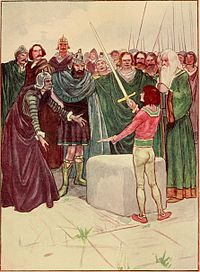

Located near the jousting grounds in a local village, only the one destined to be the true king could pull the sword from the stone.
Many men have tried and failed to remove the sword in hopes of becoming king, but a teenaged Arthur lifts it out easily. The exact manner in which he pulls it out differs from story to story, but the impossible ease in which Arthur manages the task is seen as a sign from God that Arthur is the true king.
The Sword in the Stone is often assumed to be Excalibur, even though in most stories Excalibur is actually a different sword given to Arthur by the Lady of the Lake.
Go back